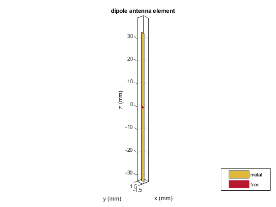
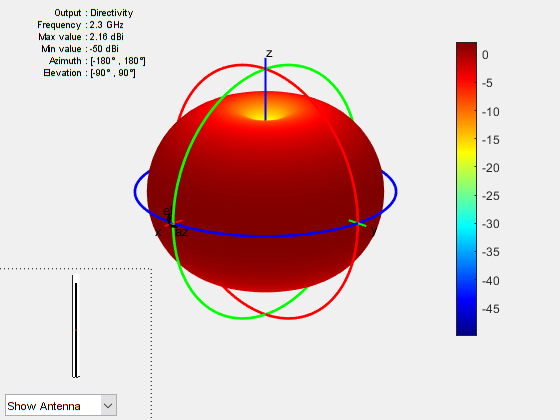
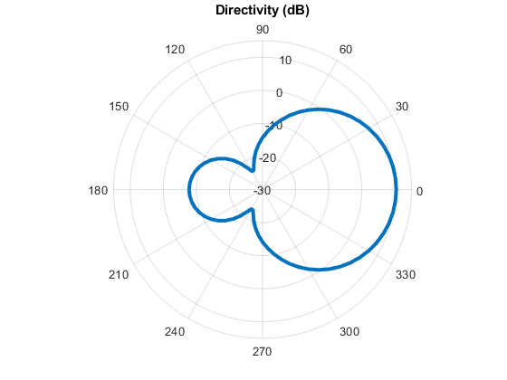
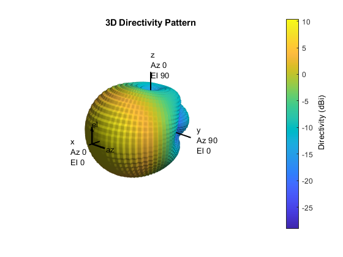
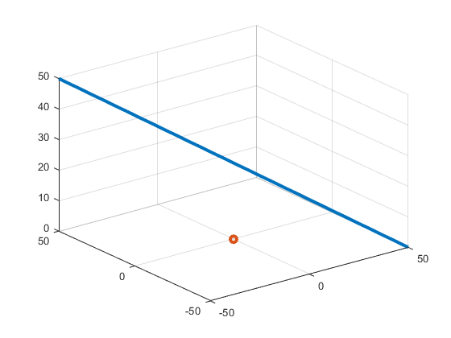
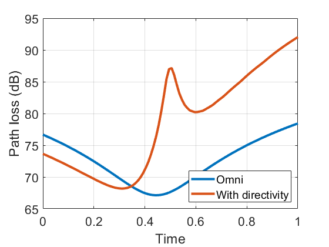

Demo: Antennas
In this demo, we will illustrate some basic MATLAB tools for computing and displaying antenna patterns. Specifically, you will learn to:
- Perform basic manipulations in spherical coordinates
- Define simple antenna patterns using the antenna toolbox
- Plot the antenna patterns in 2D and 3D
- Use the antenna patterns to compute gains along paths
Contents
Spherical coordiantes.
We first demonstrate how to perform basic manipulations in spherical coordinates.
For example, the code below generate four random points in 3D converts them to spherical and then converts them.
% Generate random data X = randn(3,4); % Compute spherical coordinates of a matrix of points % Note these are in radians! [az, el, rad] = cart2sph(X(1,:), X(2,:), X(3,:)); % We can then convert Convert back [x,y,z] = sph2cart(az,el,rad); Xhat = [x; y; z];
Simulation constants
For the remainder of the demo, we will use the following simulation constantsç
Note: In MATLAB, all values are in metric units m, s, Hz, etc. Not GHz or MHz.
fc = 2.3e9; % Carrier frequency vp = physconst('lightspeed'); % speed of light lambda = vp/fc; % wavelength
Dipole antenna
Next, we will construct a simple dipole antenna.
% Construct the antenna object ant = dipole(... 'Length', lambda/2,... 'Width', 0.01*lambda ); % Display the antenna ant.show();
Displaying the pattern
We can display the antenna pattern with the following command.
ant.pattern(fc)
Patch Element
len = 0.49*lambda; groundPlaneLen = lambda; ant2 = patchMicrostrip(... 'Length', len, 'Width', 1.5*len, ... 'GroundPlaneLength', groundPlaneLen, ... 'GroundPlaneWidth', groundPlaneLen, ... 'Height', 0.01*lambda, ... 'FeedOffset', [0.25*len 0]); % Tilt the element so that the maximum energy is in the x-axis ant2.Tilt = 90; ant2.TiltAxis = [0 1 0]; % Display the antenna pattern after rotation. % This may take a few minutes. So be patient ant2.pattern(fc, 'Type', 'Directivity'); % You can also save the pattern [dir,az,el] = ant2.pattern(fc, 'Type', 'Directivity');

Plotting a cross-section
Once the antenna pattern is stored in an array, you can plot cross sections as follows. Suppose we want to plot the cross-section at an elevation angle of 0
% Elevation angle to plot elPlot = 0; % Find the index closest to the desired angle [~, iel] = min(abs(el - elPlot)); % Plot using the polar plot. % Note the conversion to radians. You also have to use the |rlim| % command to set the limits. polarplot(deg2rad(az), dir(iel,:),'LineWidth', 3); rlim([-30, 15]); title('Directivity (dB)');
Creating a custom antenna pattern
While MATLAB has many common antennas, you will often need to load antenna data from a manufacturer or other source. Also, even when using MATLAB's antenna elements, it is often useful to compute the pattern once and store it. For this purpose, you can create a custom antenna element. Here, we will create a custom antenna element with directivity pattern we just computed from the microstrip element.
phasePattern = zeros(size(dir)); ant3 = phased.CustomAntennaElement(... 'AzimuthAngles', az, 'ElevationAngles', el, ... 'MagnitudePattern', dir, ... 'PhasePattern', phasePattern); % Plot the antenna pattern. % Note the format is slightly different since we are using % the pattern routine from the phased array toolbox ant3.pattern(fc);
Interpolating the directivity in the custom pattern
Once we have the antenna pattern, we can interpolate the values of the gain at other directions. To illustrate we will plot the total path loss between a TX at the origin and an object traveling in a linear path along a 3D path. First, we create and plot the path
% Define the linear path npts = 100; xstart = [50 -50 0]'; xend = [-50 50 50]'; t = linspace(0,1,npts); X = xstart*(1-t) + xend*t; % Plot the path in 3D along with the location of the TX at the origin plot3(X(1,:), X(2,:), X(3,:), 'Linewidth', 3); hold on; plot3(0, 0, 0, 'o', 'Linewidth', 3); grid(); hold off;
We compute the angle from the transmitter to the target. Remember to convert to degrees.
[azpath, elpath, dist] = cart2sph(X(1,:), X(2,:), X(3,:)); azpath = rad2deg(azpath); elpath = rad2deg(elpath); % Compute the free space path loss along the path without % the antenna gain. We can use MATLAB's built-in function plOmni = fspl(dist, lambda); % Compute the directivity using interpolation of the pattern. % We can use the |ant3.resp| method for this purpose, but the % interpolation is not smooth. So, we will do this by hand using % MATLAB's interpolation objects. F = griddedInterpolant({el,az},dir); % Compute the directivity using interpolation dirPath = F(elpath,azpath); % Compute the total path loss including the directivity plDir = plOmni - dirPath; % Plot the path loss over time. Can you explain the plot(t, [plOmni; plDir]', 'Linewidth', 3); grid(); set(gca, 'Fontsize', 16); legend('Omni', 'With directivity', 'Location', 'SouthEast'); xlabel('Time'); ylabel('Path loss (dB)');